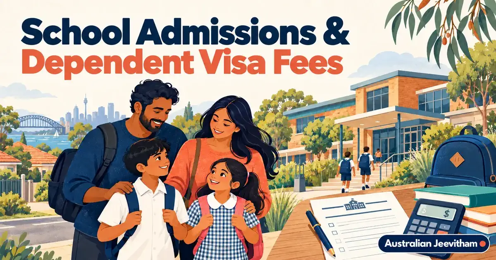

കുട്ടികളുടെ school admission, dependent visa fees ഗൈഡ്School Admissions & Dependent Visa Fees
Australia-യിൽ public school admission, tuition fee എന്നിവ visa subclass, state, school zone, child age, parent work location എന്നിവ അനുസരിച്ച് മാറും. There is no single national fee rule for children on temporary or dependent visas. Confirm the position with the education department before choosing a suburb or signing a lease.
By Binu Vadakkedath
Published and last updated: September 2026 · Verify current requirements with the linked official authorities

A visa that allows a child to study does not always mean public schooling is free. School catchment, documents, English support, fee liability എന്നിവ നേരത്തെ പരിശോധിക്കുക.
- Public School
- Visa Subclass
- Catchment
- State Fees
- Immunisation Records
This guide is general information, not migration, legal, education, employment or financial advice. Rules, fees, occupation lists and assessment processes can change. Verify your circumstances with the official authority and use a registered migration agent or qualified professional where personal advice is required. തീരുമാനം എടുക്കുന്നതിന് മുമ്പ് official website-ലെ ഏറ്റവും പുതിയ വിവരങ്ങൾ പരിശോധിക്കുക.
1. Why the state matters
Public schools are run by state and territory systems. NSW, Victoria, Queensland, Western Australia, South Australia, Tasmania, the ACT and the Northern Territory have different enrolment and fee frameworks for temporary residents.
“Dependent child-ന് school free ആണ്” എന്ന പൊതുവായ മറുപടി വിശ്വസിക്കരുത്. നിങ്ങളുടെ exact visa subclass official fee table-ൽ പരിശോധിക്കുക.
2. Examples of different settings
NSW charges many temporary residents but provides exemptions or waivers for some categories, including a regional NSW fee waiver for eligible subclass 482 families from Term 1 2025. Western Australia publishes a visa enrolment framework and currently applies a family tuition fee to many 457 and 482 families. South Australia publishes separate 482 fee rules, income settings and location-based exemptions.
These examples show why an old national comparison table can mislead. Check the current department page for the state where the child will attend.
3. Enrolment documents
- Child and parent passports and current visa evidence.
- Birth certificate or proof of relationship.
- Residential address and catchment evidence.
- Previous school reports and learning-support information.
- Immunisation history and any translated medical records.
- English translations for documents the school cannot assess.
4. Overseas vaccination records
Ask an Australian vaccination provider to review translated overseas vaccination records and add eligible immunisations to the Australian Immunisation Register. The provider can identify any catch-up needs and help you obtain an Immunisation History Statement.
School immunisation rules are not identical across Australia. Follow the enrolment instructions for your state and school rather than assuming one national rule.
5. Budget before choosing a home
Ask whether fees are annual, per child or per family, and whether temporary resident administration or international student charges apply. Also budget uniforms, devices, excursions, transport, before and after school care, and voluntary contributions.
Catchment school ഉറപ്പാക്കാതെ lease sign ചെയ്യാതിരിക്കുക. ചില schools capacity കാരണം out-of-area applications സ്വീകരിക്കില്ല.
Official sources and current checks
ഈ ലേഖനത്തിലെ പ്രധാന വിവരങ്ങൾ പരിശോധിക്കാൻ താഴെയുള്ള official links ഉപയോഗിക്കുക. Fees, processing times, eligibility എന്നിവ മാറാം.
Frequently asked questions
Is public school free for every dependent child in Australia?
No. Fee liability depends on the state or territory, the child and parent visa subclass, location and any exemption or waiver.
Should I choose a suburb before checking the school?
Check the school catchment and enrolment capacity first. A residential address can affect the designated public school.
Can overseas vaccinations be added to the Australian Immunisation Register?
An Australian vaccination provider can assess translated evidence and add eligible overseas vaccinations to the register.
Are school fees the same in every state?
No. Each state and territory publishes its own temporary resident and international student settings.
Skills assessments, settlement & life after PR

AHPRA & APC Pharmacist Registration
Knowledge Stream, OPRA exam, CAOP, 1,575-hour supervised practice, English requirements, and visa options for Kerala pharmacists.
- OPRA Exam
- 1,575 hrs Practice
- Healthcare

Malayalam Resources Hub
A comprehensive directory of guides covering jobs, visas, healthcare registration, licence conversion, superannuation, and settling into Australia.
- 11+ Guides
- Jobs & Visas
- Settlement

AHPRA Nursing Registration
A step-by-step roadmap for internationally qualified nurses covering Stream B, OBA, NCLEX-RN, OSCE, and English requirements.
- AHPRA / NMBA
- NCLEX & OSCE
- Healthcare